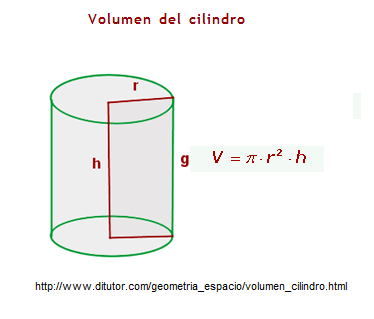
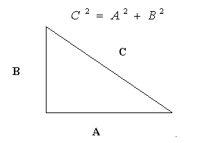
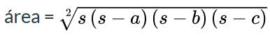

Descripción:
- Desarrollarás, en conjunto con
el profesor, los algoritmos de algunos problemas. También verás la forma en
cómo estos algoritmos puede convertirse en un programa en Python.

Objetivo:
- Escribir programas simples en
Python que impliquen el uso de operadores básicos y funciones predefinidas.

Modalidad:

Instrucciones:
- Desarrolla e implementa, en
conjunto con el profesor, los siguientes algoritmos y programas.
Al terminar cada uno de
tus programas toma
en cuenta la información de los casos de prueba:
Casos de prueba:
Input: Son
los valores introducidos por el usuario.
Output: Son
los resultados esperados.

Ejercicios:
- Convierta un tiempo expresado en segundos
al formato de horas, minutos y segundos. Considera que el valor del
tiempo en segundos es proporcionado por el usuario. Solicite un
tiempo en
segundos y calcule la cantidad de horas, minutos y segundos.
Despliegue los resultados en pantalla. Variables utilizadas:
tiempo,
horas, minutos, segundos y residuo. Guardar este archivo con el nombre:
A1_Matricula.py
Casos de
prueba:
Input: Tiempo en segundos
Output: Horas
Output: Minutos
Output: Segundos
|
Input:
8243
Output:
2
Output:
17
Output:
23
|
Input:
3521
Output:
0
Output:
58
Output:
41
|
Input:
5679
Output:
1
Output:
34
Output:
39
|
- Convierta un tiempo expresado en segundos
al formato de horas, minutos y segundos. Considera que el valor del
tiempo en segundos es proporcionado por el usuario. Solicite un
tiempo en
segundos y calcule la cantidad de horas, minutos y segundos.
Despliegue los resultados en pantalla. Variables utilizadas:
tiempo,
horas, minutos, segundos y residuo. Guardar este archivo con el nombre:
A1_Matricula.py
Casos de
prueba:
Input: Tiempo en segundos
Output: Horas
Output: Minutos
Output: Segundos
|
Input:
8243
Output:
2
Output:
17
Output:
23
|
Input:
3521
Output:
0
Output:
58
Output:
41
|
Input:
5679
Output:
1
Output:
34
Output:
39
|
-
Convertir de grados Centígrados a grados
Fahrenheit. Digite el número de grados Centígrados que desea
convertir a grados Fahrenheit. F = C*(9/5)+32 (utiliza la fórmula
para realizar la conversión) El resultado debe mostrar X grados
Centígrados corresponde a X grados Fahrenheit. Guarda este archivo
con el nombre: A_Matricula.py
-
Un alumno desea conocer la
calificación final de su materia de Programación. Guarda este
archivo con el nombre:
A_Matricula.py La rúbrica de
esta materia se compone de la siguiente manera:
-
Parcial 1 20%
-
Parcial 2 35%
-
Proyecto final 15%
-
Examen final 30%
-
Calcular el área de un círculo. Guarda este
archivo con el nombre:
A_Matricula.py
-
Convertir de grados Farenheit a Celsius.
Recuerda que Celsius = 5 / 9 ( Farenheit – 32). Guarda este
archivo con el nombre:
A_Matricula.py
-
Calcular la superficie de un
triángulo en función de la base y la altura. Guarda este archivo
con el nombre: A_Matricula.py
-
Solicitar tres valores " enteros " al usuario y realiza
las operaciones aritméticas mostradas en la parte inferior. El
resultado de cada operación debe ser desplegado en la pantalla
(procura guardar el resultado de cada operación en un variable
auxiliar AUX antes de desplegar el resultado de cada operación).
Variables a utilizar: A, B, C y AUX. Guarda este archivo con el nombre:
A_Matricula.py
Operaciones:
-
Suma de los tres numeros
-
Residuo de A entre C
-
Multiplicar A por B y dividir entre C
-
Restar A de C, guardar en AUX y
dividir C entre AUX
-
Sacar el promedio de los tres numeros
Analizar los resultados de cada operación
para los valores de A=10 y B=5 y C=2.
-
Solicitar tres valores "enteros" al usuario y realiza las
operaciones aritméticas mostradas en la parte inferior. El
resultado de cada operación debe ser desplegado en la pantalla
(procura guardar el resultado de cada operación en un variable
auxiliar AUX antes de desplegar el resultado de cada operación).
Variables utizadas: A, B, C y AUX. Guardar este archivo con el nombre:
A_Matricula.py
Operaciones:
-
A * B
-
A / B
-
A % B
-
A / B - C
-
A / ( B - C )
Analizar los resultados de cada
operación para los valores de A=10 y B=5 y C=2.




Escribe un programa que
pida el valor del radio y muestre su área y su volumen. Guarda este
archivo con el nombre: A_Matricula.py


donde:

Escribe un
programa que pida al usuario los valores a, b y c y calcule y
muestre el área del triángulo usando esta fórmula. Guarda este
archivo con el nombre: A_Matricula.py


Recursos:
4.
Jerarquia de operadores
Funciones
predefinidas

Especificaciones de
entrega:
|